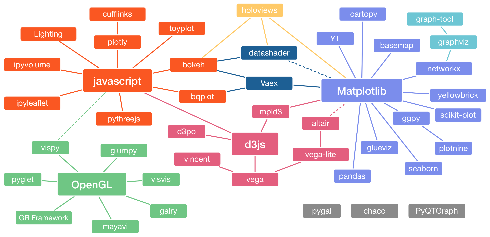
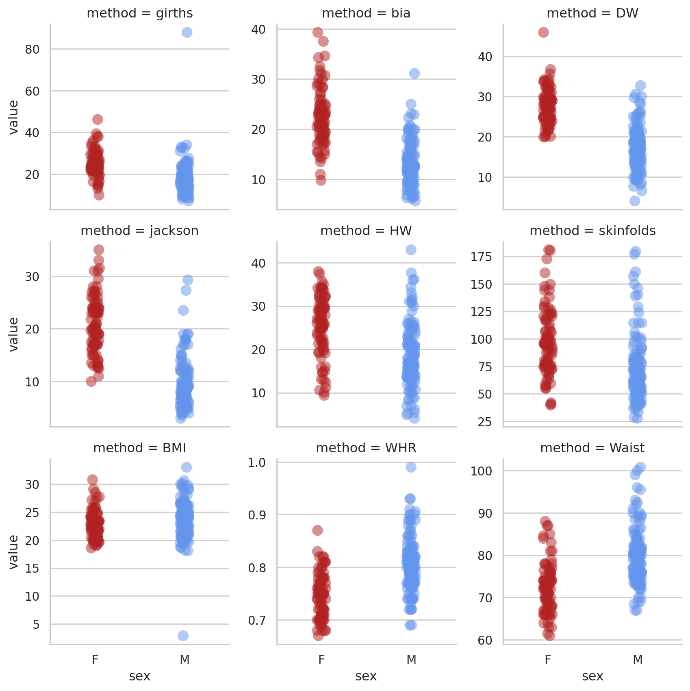
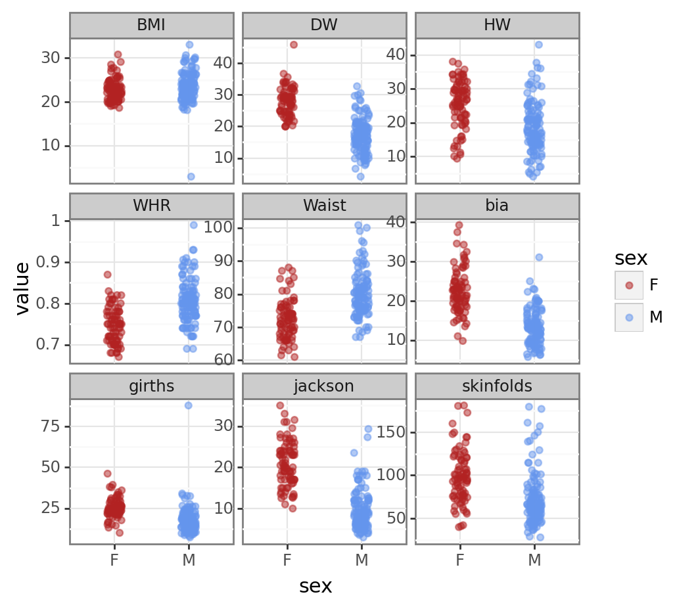
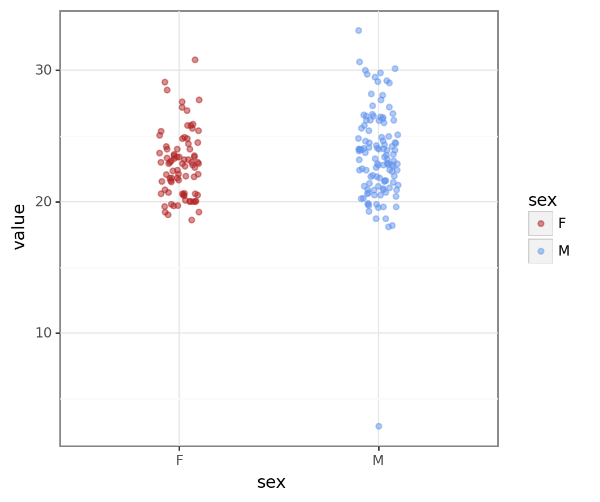
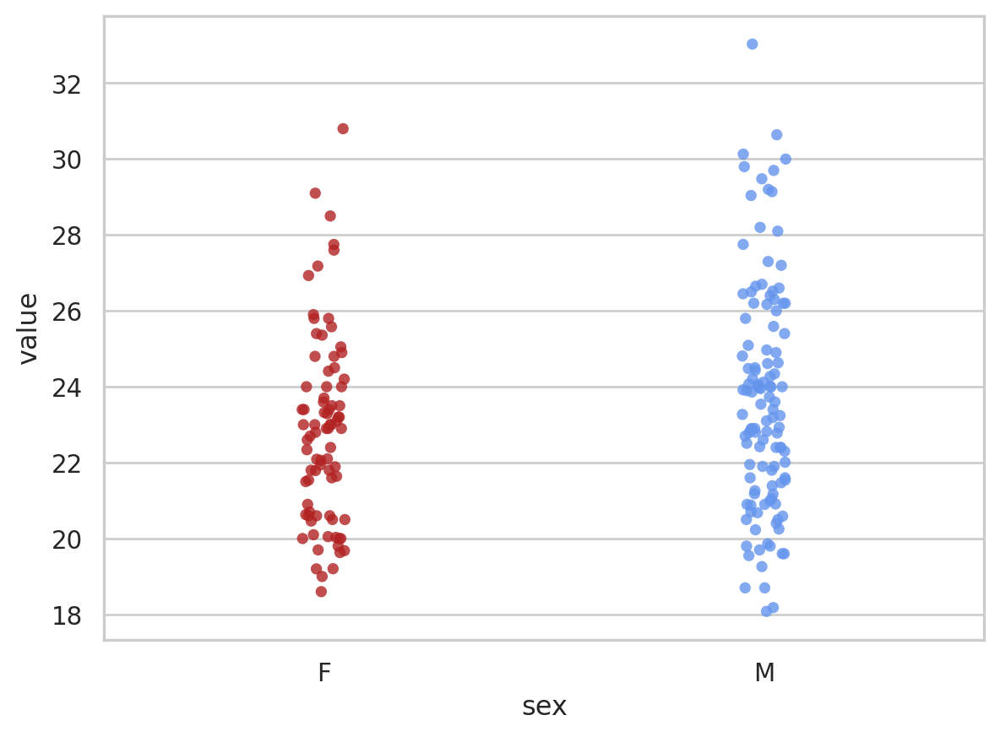
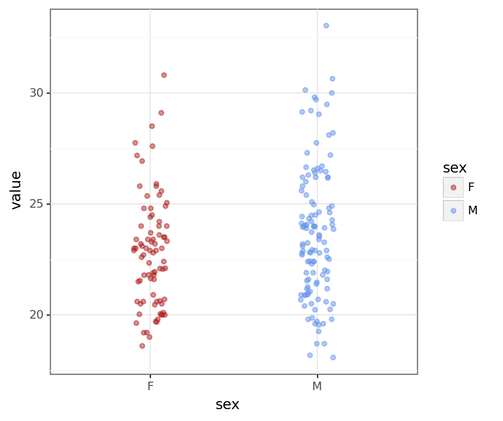
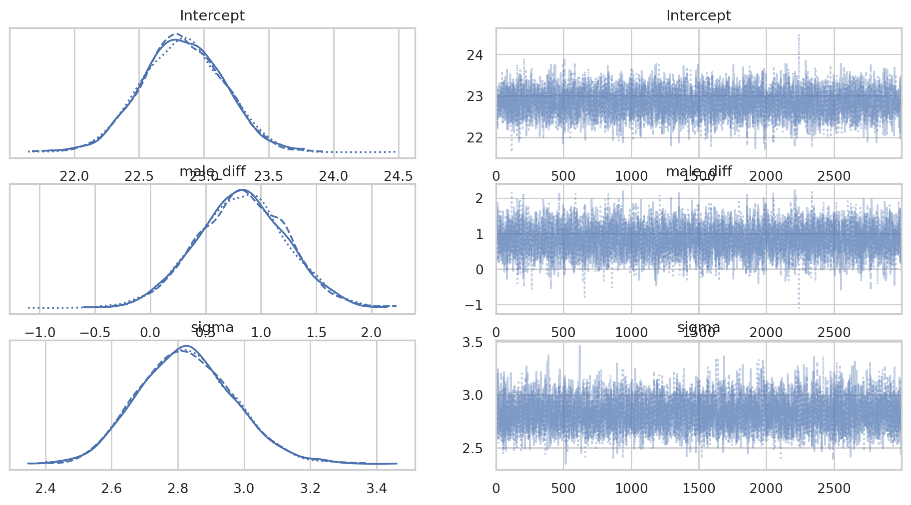
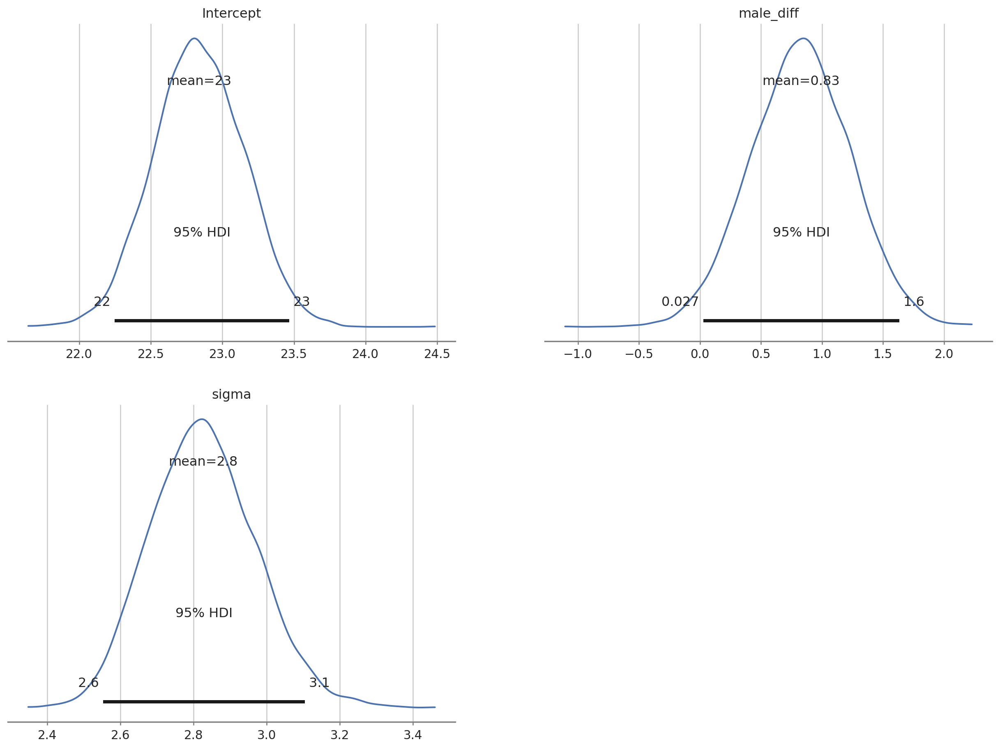
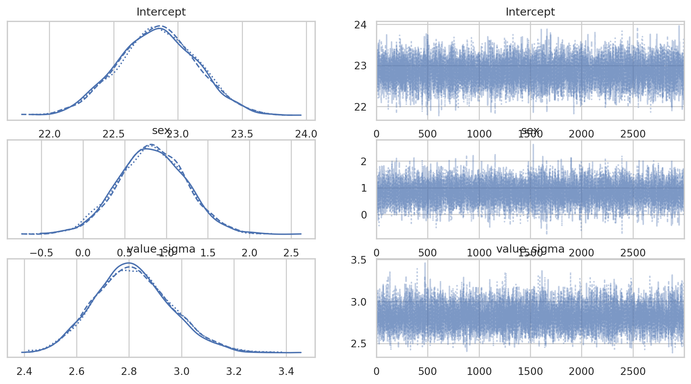
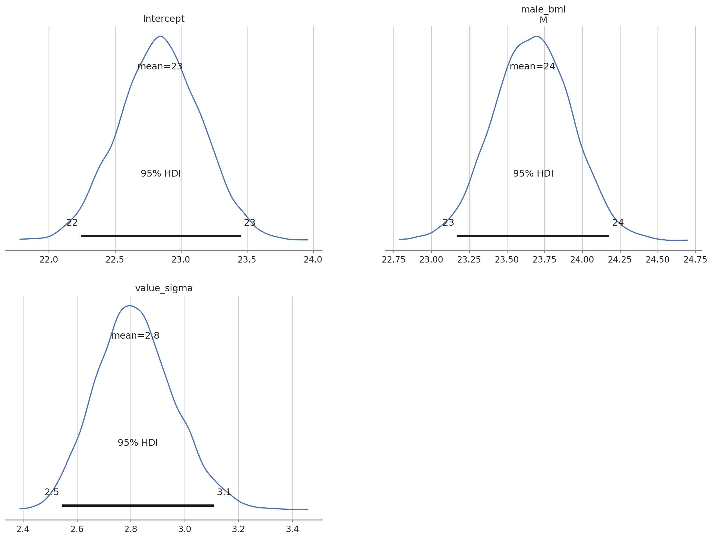

import pandas as pd # dataframes for python
import plotnine as pn # ggplot2 clone
pn.options.figure_size = (5, 5) # set a default figure size for plotnine plots
pn.options.current_theme = pn.theme_bw() # set simple theme
import seaborn as sns # statistical plotting in python land
sns.set_theme(style="whitegrid") # plot theme
# frequentist modeling
import scipy.stats as stats # classic freq stats for python
import pingouin as pg # alt to scipy.stats
# bayesian modeling
import pymc as pm # write your models explicitly
import bambi as bmb # formula like interface
import arviz as az # plots for MCMC objectsIntroduction
This is the second of three posts that will carry out data loading, exploration, filtering and statistical testing (frequentist & Bayesian). In the first post of the series we used R. In this post we’ll use python. Like the previous post there won’t be much exposition - we’ll just move through the process.
If you want to follow along the data are here.
Preliminaries
Python, like R, has a host of extra packages to help with data import, wrangling, plotting & building various kinds of models. The first step is to load the packages we will need. I use the Anaconda python distribution and packages that are not installed by default can be installed with the conda tool. In this post we use the pymc package for Bayesian modeling. The installation notes for pymc recommend installing it into its own python conda environment so this is what I did! To run the code in VSCode I set the relevant python interpreter by using Ctrl+Shift+P to bring up the Command Palette and selecting the relevant python environment. The other packages had to be installed into the same enviroment using conda install.
Ok, let’s get on with loading the packages we’ll need!
Loading the data
We can use the read_csv() function of the pandas (Reback et al. 2020) package to read in the data. These data are from body composition practicals run as part of the Sport & Exercise Science degree at the University of Stirling. They were collected over a numbers of years by the students who carried out various measures on themselves.
# get the data
data_in = pd.read_csv('data/BODY_COMPOSITION_DATA.csv', sep=',', na_values = "NA")Exploration & tidying
The pandas package also provides some tools for exploring the data.
data_in.head()
# examine summary of types etc
data_in.info() # there are missing values in bia & HW<class 'pandas.core.frame.DataFrame'>
RangeIndex: 203 entries, 0 to 202
Data columns (total 10 columns):
# Column Non-Null Count Dtype
--- ------ -------------- -----
0 sex 203 non-null object
1 girths 203 non-null float64
2 bia 202 non-null float64
3 DW 203 non-null float64
4 jackson 203 non-null float64
5 HW 202 non-null float64
6 skinfolds 203 non-null float64
7 BMI 203 non-null float64
8 WHR 203 non-null float64
9 Waist 203 non-null float64
dtypes: float64(9), object(1)
memory usage: 16.0+ KBWe can see that there are some missing values in the BIA and HW variables (these variables have 202 non-null values). There are many ways to deal with missing values but here we will just drop rows with missing values. The dropna() method for pandas dataframes allows us to drop rows (axis 0) or columns (axis 1) with missing values. We also specify the inplace = True argument so that the data we are working on is altered.
# drop the rows (index 0) with missing values; alter dataframe (inplace = True)
data_in.dropna(axis = 0, inplace = True)
data_in.info() # all non-null values
# summary stats
data_in.describe()<class 'pandas.core.frame.DataFrame'>
Int64Index: 201 entries, 0 to 201
Data columns (total 10 columns):
# Column Non-Null Count Dtype
--- ------ -------------- -----
0 sex 201 non-null object
1 girths 201 non-null float64
2 bia 201 non-null float64
3 DW 201 non-null float64
4 jackson 201 non-null float64
5 HW 201 non-null float64
6 skinfolds 201 non-null float64
7 BMI 201 non-null float64
8 WHR 201 non-null float64
9 Waist 201 non-null float64
dtypes: float64(9), object(1)
memory usage: 17.3+ KB| girths | bia | DW | jackson | HW | skinfolds | BMI | WHR | Waist | |
|---|---|---|---|---|---|---|---|---|---|
| count | 201.000000 | 201.000000 | 201.000000 | 201.000000 | 201.000000 | 201.000000 | 201.000000 | 201.000000 | 201.000000 |
| mean | 20.734552 | 16.980100 | 21.614647 | 14.212189 | 21.426408 | 82.684751 | 23.223000 | 0.781529 | 76.756716 |
| std | 8.382091 | 6.792665 | 7.307617 | 7.479344 | 8.006785 | 33.108192 | 3.168286 | 0.057142 | 7.352106 |
| min | 7.150000 | 5.700000 | 4.100000 | 3.000000 | 4.100000 | 27.750000 | 2.900000 | 0.670000 | 61.000000 |
| 25% | 15.080000 | 11.900000 | 16.300000 | 8.000000 | 15.000000 | 59.250000 | 21.170000 | 0.740000 | 72.000000 |
| 50% | 20.120000 | 15.900000 | 21.400000 | 12.600000 | 21.000000 | 76.230000 | 23.000000 | 0.780000 | 76.000000 |
| 75% | 24.400000 | 21.200000 | 28.000000 | 19.000000 | 27.000000 | 100.350000 | 24.800000 | 0.815000 | 81.000000 |
| max | 87.900000 | 39.300000 | 45.900000 | 35.000000 | 43.000000 | 181.000000 | 33.030000 | 0.990000 | 100.800000 |
Next we will convert our data from wide format to long format (Wickham 2014) with the pandas.melt() function. Long data makes plotting and statistical analyses easier. In long format data the values for each individual and each measurement technique are identified by rows rather than spread across row & column combinations.
# long data
dataL = pd.melt(data_in, id_vars = "sex", var_name = "method", value_name = "value")
dataL.head()| sex | method | value | |
|---|---|---|---|
| 0 | M | girths | 10.85 |
| 1 | M | girths | 14.12 |
| 2 | M | girths | 12.30 |
| 3 | M | girths | 8.50 |
| 4 | M | girths | 11.66 |
Exploration with plots is an essential step for checking values and the distribution of data. There is an extensive plotting ecosystem in python.

The seaborn (Waskom 2021) package provides a high level interface for plotting data & statistical summaries. If you’re used to e.g. ggplot2 in R then the plotnine package provides very similar functionality.The tabs below demonstrate the same plot using each of these packages.
fg = sns.FacetGrid(dataL, col = 'method', hue = 'sex', col_wrap = 3, sharey = False); # create grid
fg.map(sns.stripplot, 'sex', 'value', jitter = 0.05, size = 10, palette=["firebrick", "cornflowerblue"], alpha = 0.5, order = ["F", "M"]); # map stripplot onto grid
pt = pn.ggplot(dataL, pn.aes('sex', 'value', colour = 'sex')) + pn.geom_jitter(width = 0.1, alpha = 0.5) + pn.facet_wrap("method", scales = "free_y") + pn.scale_colour_manual(values=['firebrick', 'cornflowerblue'])
pt/home/iain/anaconda3/envs/pymc_env/lib/python3.11/site-packages/plotnine/facets/facet.py:440: PlotnineWarning: If you need more space for the x-axis tick text use ... + theme(subplots_adjust={'wspace': 0.25}). Choose an appropriate value for 'wspace'.
There are a couple of mad values in the BMI and girths variables. For the rest of the analysis we’ll concentrate on the BMI variable. First we’ll filter the data to just BMI.
# filter to just bmi data
bmi_data = dataL[dataL.method == "BMI"]
bmi_data.info()<class 'pandas.core.frame.DataFrame'>
Int64Index: 201 entries, 1206 to 1406
Data columns (total 3 columns):
# Column Non-Null Count Dtype
--- ------ -------------- -----
0 sex 201 non-null object
1 method 201 non-null object
2 value 201 non-null float64
dtypes: float64(1), object(2)
memory usage: 6.3+ KB# first few values
bmi_data.head()| sex | method | value | |
|---|---|---|---|
| 1206 | M | BMI | 20.70 |
| 1207 | M | BMI | 21.90 |
| 1208 | M | BMI | 21.39 |
| 1209 | M | BMI | 19.26 |
| 1210 | M | BMI | 22.30 |
We’ll re-plot these data.
bmi_pt1 = sns.stripplot(x = "sex", y = "value", data = bmi_data, jitter = 0.05, palette=["firebrick", "cornflowerblue"], alpha = 0.8, order = ["F", "M"]);
bmi_pt1<Axes: xlabel='sex', ylabel='value'>bmi_pt2 = pn.ggplot(bmi_data, pn.aes("sex", "value", colour = "sex")) + pn.geom_jitter(width = 0.1, alpha = 0.5) + pn.scale_colour_manual(values = ["firebrick", "cornflowerblue"])
bmi_pt2
We can clearly see the outlier in the male data. Removing outliers is a contentious subject but a BMI of 2 is unrealistic so we’ll remove this value.
# note very low bmi point in M; let's drop that
bmi_data = bmi_data[bmi_data.value > 15]
# summary
bmi_data.describe()| value | |
|---|---|
| count | 200.000000 |
| mean | 23.324615 |
| std | 2.828887 |
| min | 18.080000 |
| 25% | 21.177500 |
| 50% | 23.000000 |
| 75% | 24.802500 |
| max | 33.030000 |
# seaborn plot
bmi_pt3 = sns.stripplot(x = "sex", y = "value", data = bmi_data, jitter = 0.05, palette=["firebrick", "cornflowerblue"], alpha = 0.8, order = ["F", "M"]);
bmi_pt3<Axes: xlabel='sex', ylabel='value'>
# plotnine plot
bmi_pt4 = pn.ggplot(bmi_data, pn.aes("sex", "value", colour = "sex")) + pn.geom_jitter(width = 0.1, alpha = 0.5) + pn.scale_colour_manual(values = ["firebrick", "cornflowerblue"])
bmi_pt4
Much better!
Frequentist testing
We’re now in a position to undertake some statistical analysis. We’ll start with a simple t-test to examine the mean difference in BMI between males and females. The scipy.stats (Virtanen et al. 2020) library provides functions for one sample, paired & independent t-tests (and other tests). We first extract the data we want to test into separate series and then pass these series to the appropriate function. The stats.ttest_ind() function returns a tuple containing the t-statistic and the p-value for the test and we can extract these and print those. The equal_var = False argument means we get Welch’s t-test which doesn’t assume equal variances in each group.
# test diff between men & women; get data
male_data = bmi_data[bmi_data.sex == "M"]
female_data = bmi_data[bmi_data.sex == "F"]
# do the test
t_res = stats.ttest_ind(male_data.value, female_data.value, equal_var = False) # tuple out, t-stat and p-value
t_res
# print informative result
print("The t-statistic is %.2f with a p-value of %.3f." % (t_res[0], t_res[1]))The t-statistic is 2.11 with a p-value of 0.036.The pingouin (Vallat 2018) package also provides functions for statistical testing.
Using the ttest() function with correction = 'auto' means pingouin automatically uses Welch’s T-test when the sample sizes are unequal as they are here.
# pingouin example; correction =‘auto’
pg.ttest(male_data.value, female_data.value, paired = False, correction = 'auto')| T | dof | alternative | p-val | CI95% | cohen-d | BF10 | power | |
|---|---|---|---|---|---|---|---|---|
| T-test | 2.11342 | 192.047574 | two-sided | 0.035856 | [0.05, 1.59] | 0.293662 | 1.242 | 0.529014 |
The pingouin package provides us with much more information - which may or may not be useful to you. The difference between male & female BMI is significant. This means that in a hypothetical long series of repeats of this study with different samples from the same population we would expect to see a difference as big or bigger between the sexes in more than 95% of those repeats. The pingouin package also reports the power of the test here. This is post-hoc power though & post-hoc power is witchcraft e.g. (Gelman 2019).
Bayesian testing
In the previous post with R we used the Stan probabilistic programming language to create a Bayesian model for the BMI data. We could also use Stan here via the pystan interface but instead we’ll use a native python library called [pymc] (Salvatier, Wiecki, and Fonnesbeck 2016). The pymc package allows us to write data generating models and then use Markov Chain Monte Carlo (MCMC) sampling with those model definitions to generate posterior distributions. pymc supports a range of MCMC algorithms. In the code below we use the same priors we defined in the post using R.
# bayesian test with pymc
# create dummy variables; F = 0, M = 1
bmi_data_dummy = pd.get_dummies(bmi_data, columns = ["sex"], drop_first = True)
# set up priors & likelihood
# https://docs.pymc.io/en/latest/api/generated/pymc.sample.html
with pm.Model() as model: # model specifications in PyMC3 are wrapped in a `with` statement
# Define priors
sigma = pm.HalfNormal("sigma", sigma = 100)
intercept = pm.Normal("Intercept", mu = 25, sigma=10)
x_coeff = pm.Normal("male_diff", mu = 0, sigma = 5)
# Define likelihood
likelihood = pm.Normal("value", mu = intercept + x_coeff * bmi_data_dummy.sex_M, sigma=sigma, observed=bmi_data_dummy.value)Next we run the MCMC sampling on the model we defined above; by default the NUTS algorithm is used. This is the same MCMC algorithm as the Stan probabilistic progamming language uses by default. Using return_inferencedata = True means we can easily plot the results (see below).
# MCMC sampling
# 3 MCMC chains
# draw 3000 posterior samples using NUTS sampling; 1000 iter burn-in
with model:
bayes_bmi = pm.sample(3000, tune = 1000, return_inferencedata = True, chains = 3)Auto-assigning NUTS sampler...
Initializing NUTS using jitter+adapt_diag...
Multiprocess sampling (3 chains in 4 jobs)
NUTS: [sigma, Intercept, male_diff]
Sampling 3 chains for 1_000 tune and 3_000 draw iterations (3_000 + 9_000 draws total) took 2 seconds.
100.00% [12000/12000 00:01<00:00 Sampling 3 chains, 0 divergences]
The arviz library (Kumar et al. 2019) provides tools for summarising & plotting data from MCMC chains & posterior distributions.
az.plot_trace(bayes_bmi);
We want the traceplots (on the right) to look like ‘hairy caterpillars’ & they all look fine here. The posterior distributions for each parameter also look healthy. We can plot the posteriors using arviz as well.
az.plot_posterior(bayes_bmi, grid = (2,2), hdi_prob = 0.95);
The posterior distributions all look good. We can extract the intercept posterior and the posterior for the effect of ‘male’ and add these together to get the posterior for male BMI.
# add Intercept & male diff posteriors; keep this new posterior in existing InferenceData object
bayes_bmi.posterior["male_bmi"] = bayes_bmi.posterior["Intercept"] + bayes_bmi.posterior["male_diff"]
# replot with only intercept (female BMI), male BMI and sigma
az.plot_posterior(bayes_bmi, var_names = ["Intercept", "male_bmi", "sigma"] , grid = (2,2), hdi_prob = 0.95);# summary
az.summary(bayes_bmi, var_names = ["Intercept", "male_bmi", "sigma"] , kind = "stats", hdi_prob = 0.9)| mean | sd | hdi_5% | hdi_95% | |
|---|---|---|---|---|
| Intercept | 22.835 | 0.316 | 22.292 | 23.317 |
| male_bmi | 23.661 | 0.258 | 23.247 | 24.099 |
| sigma | 2.826 | 0.143 | 2.588 | 3.051 |
The output tells us that the estimated mean for female BMI is 22.8 (females were dummy coded as 0). Given the priors we used we can say that there is a 90% probability that the value for female BMI lies between 22.3 and 23.4. The estimated male BMI is 23.6 with 90% probability of being between 23.2 & 24. Note that the actual values might vary in the decimal point because the MCMC chains are random.
The bambi library (Capretto et al. 2022) can be used to create Bayesian models with a more intuitive formula interface like brms or rstanarm in R.
# model with bambi
# define priors
prior_spec = {
"Intercept": bmb.Prior("Normal", mu = 25, sigma = 10),
"sex_M": bmb.Prior("Normal", mu = 0, sigma = 5),
"value_sigma": bmb.Prior("HalfNormal", sigma = 100)
}
# define the model; formula syntax
bmb_bayes_model = bmb.Model("value ~ sex", priors = prior_spec, data = bmi_data)
# MCMC sampling; returns InferenceData obj
bmb_bayes_bmi = bmb_bayes_model.fit(draws = 3000, tune = 1000, chains = 3)Auto-assigning NUTS sampler...
Initializing NUTS using jitter+adapt_diag...
Multiprocess sampling (3 chains in 4 jobs)
NUTS: [value_sigma, Intercept, sex]
Sampling 3 chains for 1_000 tune and 3_000 draw iterations (3_000 + 9_000 draws total) took 2 seconds.
100.00% [12000/12000 00:01<00:00 Sampling 3 chains, 0 divergences]
The bmb_bayes_bmi object is of type InferenceData like that returned from pymc (bambi uses pymc under the hood). We can use the bambi result in the same way we used the pymc result with arviz.
First we’ll plot the posterior distributions and plots for each MCMC chain.
# plots and dists
az.plot_trace(bmb_bayes_bmi);
Next we’ll plot the posterior distributions and get summaries of those posteriors.
# plot posteriors
az.plot_posterior(bmb_bayes_bmi, grid = (2,2), hdi_prob = 0.95);
# Key summary and diagnostic info on the model parameters
az.summary(bmb_bayes_bmi)| mean | sd | hdi_3% | hdi_97% | mcse_mean | mcse_sd | ess_bulk | ess_tail | r_hat | |
|---|---|---|---|---|---|---|---|---|---|
| Intercept | 22.840 | 0.309 | 22.255 | 23.417 | 0.003 | 0.002 | 15248.0 | 7273.0 | 1.0 |
| sex[M] | 0.828 | 0.406 | 0.027 | 1.549 | 0.003 | 0.003 | 15087.0 | 7029.0 | 1.0 |
| value_sigma | 2.816 | 0.144 | 2.545 | 3.086 | 0.001 | 0.001 | 12954.0 | 6515.0 | 1.0 |
We get some extra information using the bambi summary.
As we did in the pymc3 example we can add the Intercept and sex chains together to get a posterior distribution for the male BMI and add this data to our existing `` object.
bmb_bayes_bmi.posterior["male_bmi"] = bmb_bayes_bmi.posterior["Intercept"] + bmb_bayes_bmi.posterior["sex"]We can easily summarise & plot the parameters we are interested in.
# plot selected posteriors
az.plot_posterior(bmb_bayes_bmi, var_names = ["Intercept", "male_bmi", "value_sigma"], grid = (2,2), hdi_prob = 0.95);
# posterior summary
az.summary(bmb_bayes_bmi, var_names = ["Intercept", "male_bmi", "value_sigma"], kind = "stats", hdi_prob = 0.9)| mean | sd | hdi_5% | hdi_95% | |
|---|---|---|---|---|
| Intercept | 22.840 | 0.309 | 22.322 | 23.335 |
| male_bmi[M] | 23.668 | 0.259 | 23.249 | 24.091 |
| value_sigma | 2.816 | 0.144 | 2.570 | 3.043 |

Summary
This post has been a quick skip through some data loading, exploration, filtering and both frequentist & Bayesian modelling with python.
References
Capretto, Tomás, Camen Piho, Ravin Kumar, Jacob Westfall, Tal Yarkoni, and Osvaldo A. Martin. 2022. “Bambi: A Simple Interface for Fitting Bayesian Linear Models in Python.” arXiv. https://doi.org/10.48550/arXiv.2012.10754.
Gelman, Andrew. 2019. “Don’t Calculate Post-hoc Power Using Observed Estimate of Effect Size.” Annals of Surgery 269 (1): e9–10. https://doi.org/10.1097/SLA.0000000000002908.
Kumar, Ravin, Colin Carroll, Ari Hartikainen, and Osvaldo Martin. 2019. “ArviZ a Unified Library for Exploratory Analysis of Bayesian Models in Python.” Journal of Open Source Software 4 (33): 1143. https://doi.org/10.21105/joss.01143.
Reback, Jeff, Wes McKinney, jbrockmendel, Joris Van den Bossche, Tom Augspurger, Phillip Cloud, gfyoung, et al. 2020. “Pandas-Dev/Pandas: Pandas 1.0.3.” Zenodo. https://doi.org/10.5281/zenodo.3715232.
Salvatier, John, Thomas V. Wiecki, and Christopher Fonnesbeck. 2016. “Probabilistic Programming in Python Using PyMC3.” PeerJ Computer Science 2 (April): e55. https://doi.org/10.7717/peerj-cs.55.
Vallat, Raphael. 2018. “Pingouin: Statistics in Python.” Journal of Open Source Software 3 (31): 1026. https://doi.org/10.21105/joss.01026.
Virtanen, Pauli, Ralf Gommers, Travis E. Oliphant, Matt Haberland, Tyler Reddy, David Cournapeau, Evgeni Burovski, et al. 2020. “SciPy 1.0: Fundamental Algorithms for Scientific Computing in Python.” Nature Methods 17 (3): 261–72. https://doi.org/10.1038/s41592-019-0686-2.
Waskom, Michael L. 2021. “Seaborn: Statistical Data Visualization.” Journal of Open Source Software 6 (60): 3021. https://doi.org/10.21105/joss.03021.
Wickham, Hadley. 2014. “Tidy Data.” Journal of Statistical Software 59 (1): 1–23. https://doi.org/10.18637/jss.v059.i10.